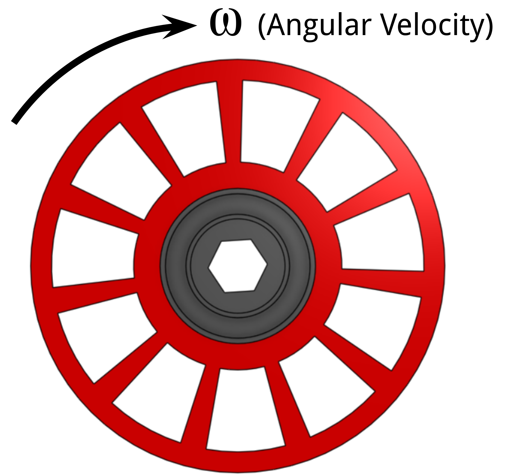
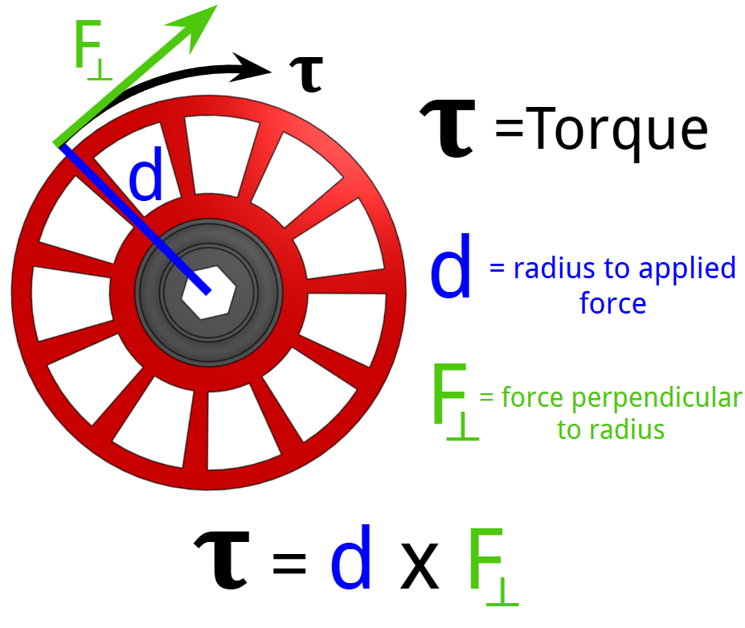

Moves the robot, accelerates, turns, and resists defense.
Pulls game pieces into the robot quickly and consistently.
Spins wheels or flywheels to launch game pieces.
Lifts mechanisms and holds position against gravity.
Raises the robot or holds the robot in place at endgame.
Moves game pieces inside the robot between subsystems.
Positions game pieces before scoring or shooting.
Turns individual swerve modules to face the correct direction.

How fast something rotates and usually measured in RPM (revolutions per minute). This velocity is not determined by the radius of the object.

How much rotational force something puts out and is determined by the size of the object's radius and the radially perpendicular force.
The two most important outputs to know about a motor are its angular velocity and its torque. Many FRC motors spin thousands of RPM, which is usually too fast for arms, climbers, and elevators and require gearing to reduce it.
Torque and Angular Velocity have an inverse relatiosnhip. If you gain one you usually lose the other.
In FRC, shooters, rollers, intakes, conveyors, and swerve drive wheels often need higher output velocity, but arms, elevators, and climbers usually need that motor velocity reduced through gears, belts, chains, or gearboxes. If the output spins too fast, the mechanism may be hard to control, unsafe, inaccurate, or likely to break game pieces and robot parts.
Torque matters because it tells you whether the motor system can create enough rotational force to move a load, resist defense, lift weight, or hold position against gravity. Drivetrains, climbers, elevators, arms, and heavy manipulators need enough torque at the output, which usually means using gear reduction and current limits to avoid stalling or overheating the motor.
The electrical push from the battery. The robot is a 12V system, but voltage drops under load.
How hard the motor is working. Heavy load, stalls, and fast acceleration draw more current.
Mechanism is harder to move.
Motor draws more amperage.
Motor and controller heat up.
Brownouts, breaker trips, and damage.
Design tool: Use current limits in motor controllers to protect wiring, breakers, motors, controllers, and mechanisms.
Current is extremely high and much of the electrical energy becomes heat instead of useful motion.
Limit stall with current limits, soft limits, hard stops, sensors, and good gearing.
Use physical brushes and a commutator to switch current through the windings. Far less common now in FRC.
Use electronic commutation through a compatible brushless motor controller. Far more common now in FRC.
Game piece, arm, elevator, wheel, robot, or climber?
Does the output need quick movement, high RPM, or controlled slow motion?
Does it need torque to push, lift, hold, or resist gravity?
Rule: A good motor choice matches the mechanism, the controller, the current limits, and the expected load.
How heavy is the mechanism and what forces act on it?
How quickly must the output move during a match?
Does it need an encoder, PID, brake mode, or soft limits?
Will it run continuously, stall, or repeat hard accelerations?
Does the team have the correct motor controller and wiring?
Is the motor legal under the current FRC rules?
Brushless motors need compatible brushless controllers.
Repeated stall creates heat and current problems.
A fast motor directly driving a heavy load is usually wrong.
High-load mechanisms can brown out or trip breakers.
Position systems may need homing or absolute encoders.
Modern motors can break parts if the design is not strong enough.
Best practice: Mechanical, electrical, and programming students should design motor systems together.
Each question is on its own slide.
Answer all 20 questions, then grade the quiz. Score at least 18 out of 20 to unlock the completion certificate.
Please enter your name before starting the quiz.
This name will appear on your completion certificate.
What do motors convert into rotational motion?
What typically happens when you increase the torque output of a motor?
Torque is best described as:
Which mechanism usually needs high torque?
Motor velocity is usually measured in:
Current is strongly related to:
Too much current can cause:
In rotational systems, power can be summarized as:
A motor is stalled when it is:
What is a good way to reduce stall damage risk?
Brushed motors use:
Brushless motors require:
Which is a common brushed FRC motor?
Which is a common brushless FRC motor?
A major advantage of brushless motors is:
The REV NEO is commonly used for:
The NEO Vortex has a higher current capability, so students should especially consider:
Kraken X60 is best described as:
Small high-velocity motors like NEO 550, 775pro, RedLine, and BAG are often used for:
What is the best overall approach to motor selection?
You need at least 18 out of 20 to unlock the completion certificate.
Not submitted.
After passing, advance to the final completion certificate.
5041 CyBear Robotics
Presented to
for successfully completing the
Complete after passing the required quiz.
Training complete after earning a passing quiz score.